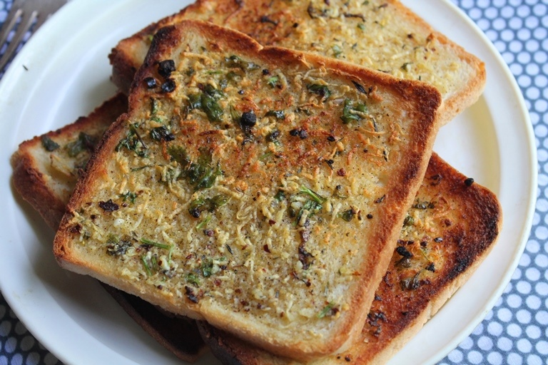

Garlic Bread

Description
"Delicious garlic bread: Crispy, golden slices of bread generously coated in aromatic garlic butter, baked to perfection for a mouthwatering side dish or appetizer. A flavorful and comforting treat that's quick and easy to make. The aroma of freshly minced garlic melding with creamy butter creates a sensory experience that elevates any meal. Whether served alongside pasta, salads, or as a delectable snack, this garlic bread recipe offers a symphony of flavors and textures, making it a beloved and versatile favorite for all occasions."
Ingredients
- Bread
- Chopped Garlic
- Oregano
- Chilli Flakes
- Salt
- Butter
- Cheese
Steps:
- Prepare the Garlic Butter:
In a small bowl, mix the softened butter and minced garlic until well combined. Season with salt and pepper to taste. You can also add grated Parmesan cheese to the mixture if you like it cheesy
- Slice the Bread:
Cut the baguette or loaf of bread into slices of your desired thickness. Make sure the slices will fit comfortably in your sandwich maker.
- Spread the Garlic Butter:
Generously spread the garlic butter mixture on one side of each bread slice. Make sure to cover the entire surface evenly.
- Optional Cheese:
If you want cheesy garlic bread, sprinkle some grated Parmesan cheese or shredded mozzarella cheese on top of the garlic butter on each slice.
- Preheat the Sandwich Maker:
Preheat your sandwich maker according to the manufacturer's instructions. Most sandwich makers take just a few minutes to heat up.
- Cook the Garlic Bread:
Once the sandwich maker is hot, place the buttered and cheese-covered bread slices, buttered side down, in the sandwich maker. Close the lid.
- Cook Until Golden Brown:
Cook the garlic bread in the sandwich maker for about 3-5 minutes, or until it becomes golden brown and crispy.
- Serve Hot:
Carefully remove the garlic bread from the sandwich maker using a spatula. Allow it to cool for a minute or two, as it will be very hot. Serve your garlic bread slices while they are still warm and crispy.